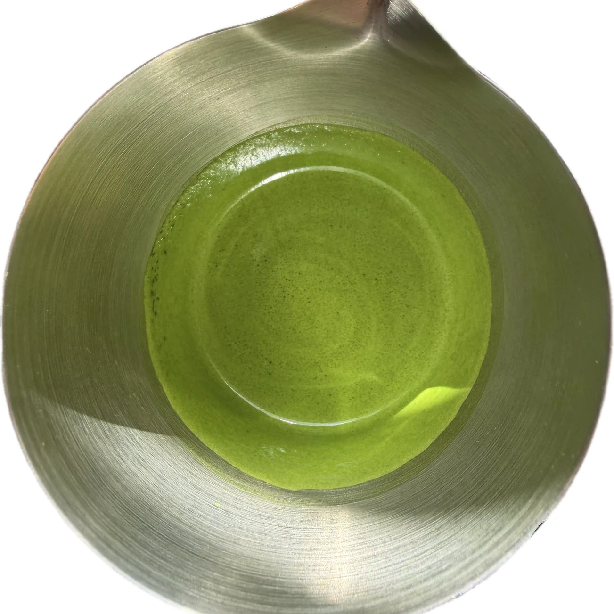
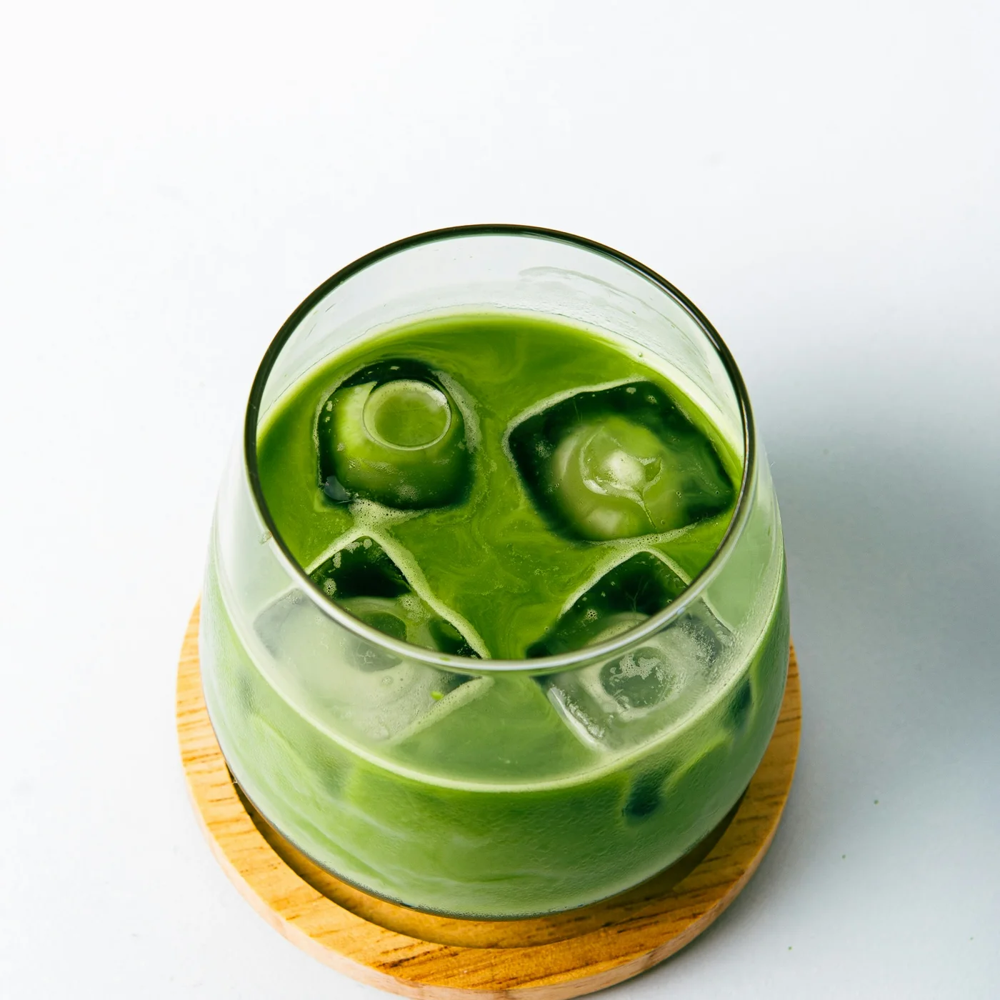
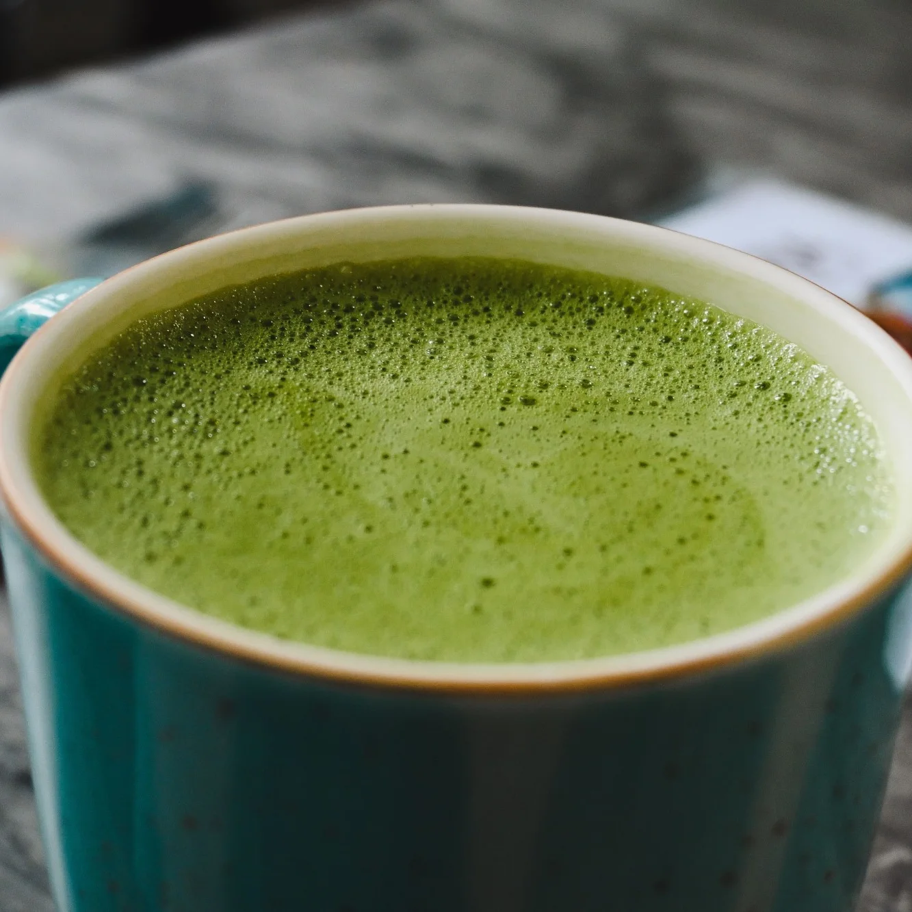

How to make perfect matcha.
Everything between the caddy and the cup: weighing and sifting, water and temperature, the whisk itself, then ice, milk and sweetener. A minute or less, start to sip.
The Sous Cycle™, by design.
On a saved setting, the Sous Cycle™ runs automatically, exactly as you dialed it in, with no need to stop, adjust or finish the matcha yourself. Switch to manual and set the speed and how long it runs, then save it if it's one you'll want again.
Incorporate
When the cycle begins, Sous creates a faster vortex that draws the sifted matcha through the water, bringing the two together evenly without requiring a whisk in the cup.
Refine
Once that work is done, the pace shifts. The slower stage settles the larger bubbles created during mixing and leaves behind a finer, polished surface. The kind of finish that can take practice to achieve consistently by hand.
Water first. Always.
Add water
Pour water into the vessel before adding matcha. Use the etched 40, 80 or 120 ml guide according to your preparation. For hot matcha, around 80°C / 175°F is a useful place to begin, though a particular tea may prefer something different.
Sift matcha
Measure your matcha and sift it directly over the water. Water first. Matcha second.
Select + start
Choose a saved setting, or go manual and set your own speed and run time. Press start: Sous begins with a faster vortex to bring the matcha and water together evenly, then changes pace for the finishing stage. It stops on its own, whichever way you set it.
Serve + enjoy
Serve it straight, build it over ice or finish it with milk. Rinse. Repeat.
Starting recipes.
Every recipe starts the same way: water first, matcha sifted over it, then Sous. What changes is the finish.

Matcha, straight
2 g matcha · 80 ml water
Pour and taste. Adjust the ratio to the tea.

Iced matcha latte
4 g matcha · 40 ml water · milk · ice
Build the glass with milk and ice, then pour Sous over the top.

Hot matcha latte
4 g matcha · 40 ml water · steamed milk
Finish with steamed milk and sweeten to taste, if desired.
One minute to a better bowl.
Free US shipping and a 1-year warranty against manufacturing defects.